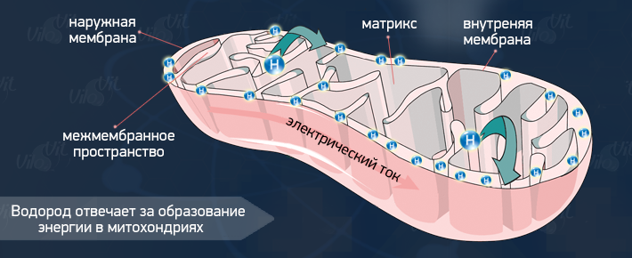

- главная
- причины возникновения болезней
- водородная вода
+ 7 (495) 64-111-63
info@vilovit.ru
Стержень Виловит® Источник Вашего Долголетия!
Живая Вода с ВилоВит
Обычная питьевая вода при использовании стержня ВилоВит обогащается важным элементом «Водород» благодаря которому вода меняет свои химические свойства и становиться полезной (живой) для организма человека.
С детских лет многим из сказок известно, что существует живая и мертвая вода. Ученые доказали - это необычные выдумки. Просто мертвая вода отравляет наш организм изнутри, а живая оздоравливает и омолаживает организм.
Живая Вода – это жидкость с отрицательной величиной окислительно-восстановительного потенциала (ОВП<0) и кислотно-щелочного баланса (рН>7,0).
Вода с использованием ВилоВит имеет показатели живой воды, но к этим показателям добавляется очень важный элемент «Водород». Где водород имеет высший приоритет, т.к. он является участником целого ряда процессов жизнедеятельности. Ионизация, щёлочность, кислотность воды – это вторая, третья, четвёртая задачи.

Воду с химическими показателями живой воды можно получить в лабораторных условиях благодаря электролизу воды, когда через обыкновенную воду пропускается электрический ток или возможно использовать ряд природных металлов, как в случае со стержнем «ВилоВит».
Живую воду можно встретить и в природе: в подземельных и горных источниках. Но природная живая вода полезна только при потреблении ее непосредственно у самого источника т.к. при взаимодействии с атмосферным воздухом через сутки вода теряет свои полезные свойства.
Стержень «ВилоВит» превращает заурядную воду в живую воду (водородную).
В японском исследовательском институте воды создали недорогой и уникальный прибор, превращающий обычную воду из-под крана в «живую» (иначе она называется водородная вода). Это стержень «ВилоВит» («ViloVit» в переводе с латинского языка «via ad longum vitam» означает «Путь к долгой жизни»). Он всего за 1-2 часа подарит вам «живую» водородонасыщенную щелочную воду – кладезь здоровья и молодости.
Теория Водорода
Многие ученые утверждают (также известный российский доктор – реаниматор В.В.Волков), что водородная вода – основа молодости и здоровья. Протон водорода для человека безвреден (Дж. Эмсли «Элементы», Мир, 1993).
Водород – первый антиоксидант на нашей планете
Водород – это самый маленький химический элемент, состоящий из протона и электрона. Благодаря своему единственному электрону водород является наилучшим антиоксидантом. Отдавая свой электрон для борьбы с активным кислородом, протон водорода способен и дальше участвовать в различных процессах организма.
Этот антиокислитель является так сказать родителем жизни и воды. Также энергетическим носителем человека. Он в пятерке самых важных химических элементов, находящихся в составе тела человека. Водород для организма человека такой же важный, как и кислород т.к. оба элемента участвуют в окислительно-восстановительных реакциях. Где механизм кислорода основан на «окислении», а механизм водорода основан на «восстановлении».
Когда обогащенная водородом вода поступает в организм человека, то молекулярный водород расщепляется на атомы. Атомы активного водорода вступают в соединение с активным кислородом, в результате чего образуется безопасная, нетоксичная вода, которая увлажняет организм, а излишки ее выводятся из организма в виде мочи и пота.
Исходя из вышеизложенного, можно с уверенностью утверждать следующее: «Живая вода» обогащенная водородом, когда поступает в организм, нейтрализует активный кислород. Это приводит к устранению окислительного стресса и минимальному проценту заболеваемости (укрепляется иммунная система). У водорода, из-за его размеров, есть способность проникать в клетки организма и оказывать влияние на органы, которые не здоровы, даже если существует такая проблема, как закупорка сосудов.
Биологическое значение водорода
У водорода значимое биологическое значение т.к. он находится в составе молекул биологических соединений (белков, липидов, углеводов, нуклеиновых кислот). Уникальная особенность водорода в том, что он образует водородную связь в этих соединениях, что делает его носителем генетической информации (ДНК). Также водород имеет способность регенерировать «митохондрии» — частицы клеток, которые отвечают за жизненное энергетическое топливо человека.
Водород и АТФ (Аденозинтрифосфорная кислота)
Для сбалансированного функционирования каждая клетка организма должна вырабатывать жизненную энергию и использовать ее. Самая основная питательная среда для клетки – аденозинтрифосфорная кислота (АТФ). Водород участвует в образовании АТФ.
Митохондрии, находящиеся в клетках, выполняют функцию синтеза АТФ, только при условии, если ионы водорода присутствуют на их мембранах.
Синтез АТФ был доказан английским биохимиком П.Митчеллом в 1961. А в 1966 году получил хемоосмотическую теорию, за которую в 1978 году получил Нобелевскую премию.
АТФ играет центральную роль в клеточных преобразованиях энергии человека. Также она является исходным сырьем для синтеза нуклеиновых кислот. Если АТФ отсутствует, то так же отсутствует энергия, регуляция и наследственность.
Водород - участник термоядерного синтеза
Водород принимает участие в холодном термоядерном синтезе, в итоге которого у клетки появляется способность создать любое вещество из таблицы Менделеева, а также устранить токсичные вещества. Ключевая фигура такого синтеза и биоэнергетики – это протон водорода.(Г.Н. Петракович, журнал «Чудеса и приключения» № 2 за 1996 г ).
Водород избавляет наш организм от биливердина ( Т. Т. Березов, Б. Ф. Коровкин ).
Ученые утверждают, что кровь поглощает кислород с помощью определенного пигмента, который называется гемоглобин. Благодаря чему, кровь доставляет кислород по всем органам и тканям. Этот пигмент находится в клетках крови и эритроцитах. Именно из – за этого у крови ярко - алый цвет, но сам гем не алого, а розового цвета.
При взаимодействии с кислородом гем становится темно – зеленого цвета, который накапливается в печени и селезенке, соединительных тканях и в клетках находящихся в костном мозге. Медицинский термин такого гема – «биливердин». Если биливердин большой концентрации, то он имеет термин – «черная желчь». Практически всем известно, насколько токсично для организма человека это вещество. Помимо этого, если его скоплений много, то это может стать причиной кислородного голодания организма. Избавиться от него почти нет возможности. Помочь человеку (спасти ему жизнь) может исключительно его печень.
Если принимать водород, то у печени появится способность преобразовывать биливердин и билирубин – краситель оранжевого цвета.
Для превращения одной молекулы зеленого биливердина в молекулу оранжевого билирубина организму приходится тратить два протона водорода. Волков В.В. считает: человеку возможно оказать действенную помощь, если насытить организм протонами водорода. В итоге, билирубин выводится с калом. Эти процессы позитивно влияют на нервную систему: она становится уравновешенной, спокойной, и прекращает отдавать команду на выработку водорода из клеточной жидкости. В итоге вода сохраняется в организме. Подобная экономность воды необходима, так как благодаря большому количеству воды замедляется процесс старения и не нарушаются различные процессы в организме.
Из вышесказанного можно подчеркнуть следующее: «водород» – это незаменимое участвующее звено цепочки процессов, происходящих в организме человека. Его основная цель – уничтожить активный кислород, и постоянно поставлять клеткам воду.
Водород участвует в важнейших динамических процессах и реакциях в организме – в биологическом окислении, обеспечивая живые клетки энергией; в реакциях биосинтеза; в бактериальном фотосинтезе; в поддержании кислотно-щелочного баланса; в процессах мембранной транспортировки. Каждый из этих процессов является жизненно-необходимым. Следовательно, наряду с кислородом и углеродом, водород является структурной и функциональной основой для жизни.
Показатели химических процессов жидкой среды
Водородная вода имеет очень полезные химические показатели, так как стержень ВилоВит изменяет свойства воды. Так, водородная вода при использовании 1-го магниевого стержня имеет показатели ОВП до -200мВ и рН до 8.5, а при использовании 2-х или 3-х стержней одновременно, показатели воды улучшаются на порядок, что ведет к более эффективному воздействию на организм водородной терапии. Но что это за химические показатели, насколько они важны и на что они влияют?
ОВП (окислительно - восстановительный потенциал) воды
Поддержка человеческого организма постоянно осуществляется за счет окислительных и восстановительных процессов. При дыхании, теплообмене, пищеварении, совершаются множественные реакции, в которых молекулы поочередно, то отдают электроны, то их забирают. Этот процесс способствует выделению энергии, которая поддерживает жизнедеятельность и восстанавливает клетки. ОВП - показатель течения окислительно – восстановительных реакций в субстрате, другими словами, активность электронов. Стоит отметить, что ОВП организма человека и обычной воды не соответствуют. У человека они активнее («–ОВП» <0), у обычной воды менее активнее («+ОВП» >0)
Обычная питьевая вода с «+ОВП» >0, проникая в организм человека, отнимает электроны и энергию от клеток и тканей, состоящие из воды на 80-90%. В итоге биологические структуры и соединения организма (клеточные мембраны, органоиды клеток, нуклеиновые кислоты и другие) подвергаются окислительному разрушению. Так организм изнашивается, стареет, жизненно важные органы теряют свою функцию, снижается иммунитет.
Если употреблять «Живую воду», ОВП которой аналогичен ОВП внутренней среды человека, то нам не приходится растрачивать большое количество биоэнергии для исправления интенсивности активности электронов воды. Впоследствии мы получаем следующий итог: такая вода хорошо и быстро ассимилируется а наш организм сохраняет дополнительную энергию. Именно поэтому японские ученые решили разработать аппарат «ВилоВит»: чтобы каждый мог пить «Живую воду», являющуюся мощным антиоксидантом и имеющим близкое человеческому ОВП.
Внешние факторы негативно воздействуют на человеческий организм. Под их негативными влияниями разрушается восстановительная система регулирования. Именно по этой причине окисление преобладает над регенерацией, из - за чего впоследствии становится низкой сопротивляемости организма – его жизненно важным органам становится тяжело работать.
Но все же предупредить раннее старение возможно, если постоянно выполнять одно условие – пить воду - антиоксидант, с приравненными к внутренней среде человека свойствами. Именно такой является «Живая вода», обладающая восстанавливающими свойствами. А получить ее предоставляет возможность стержень «ВилоВит».
Кислотно-щелочной баланс рН
рН, или как еще его называют Кислотно–щелочной баланс - это тоже очень важный химический и биологический процесс, который происходит внутри нас. У любой жидкости, находящейся в организме человека есть свои определенные показатели рН. Например, у слюны он - 6,8…7,6, а у крови - 7,35…7,45. Чем больше норма отклонена от правильного коэффициента, тем больше предрасположенности к заболеваниям. К примеру, если рН крови отклонится всего на 0,1 ед. в любую из сторон (в плюс либо минус), то может произойти летальный исход. Такие выводы взяты не “с потолка”, их сделали ученые - биохимики, изучавшие не один десяток лет.
80 лет назад биохимик из Германии Отто Варбург получил Нобелевскую премию за свои исследования в области окислительно – восстановительных процессов в организме человека. Его труды были не напрасны, так как он разгадал взаимосвязь двух между собой связанных уровней - рН жидкости организма и развития раковых новообразований. Он смог подтвердить предположение других ученых: если рН жидкости организма превышает (7,4 единицы), то есть вероятность того, что опухоль может рассосаться. Но если показатель снижен (7,1 единицы), то возникновение онкологии неизбежно.
Дисбаланс кислотно – щелочного равновесия – это причина многих заболеваний.
Не удивительно, что организм человека сильно закисляется, это связано с тем что основные продукты питания, потребляемые человеком, кислообразующие, а щелочнообразующие продукты все меньше добавляются в наш рацион.
У основной массы людей кислотно–щелочные нарушения проявляются в виде состояния ацидоза. Второй термин этого состояния «повышенная кислотность». Все мы знаем про то, что у кого ацидоз, нельзя употреблять в пищу такие продукты, как мясо, щавель и другие кислообразующие продукты. Эти продукты еще больше повышают кислотность.
При ацидозе организм с трудом усваивает минералы (кальций, калий, магний, натрий), в результате они выводятся из организма. В итоге от недостатка минералов страдают органы человека. Если вовремя не выявить ацидоз, то можно сильно навредить организму.
Какие осложнения могут вызвать ацидоз?
- Снижение иммунитета.
- Ожирение (либо просто значительное прибавление в весе).
- Повышение сахара в крови.
- Развитие онкологического заболевания.
- Сердечно – сосудистые заболевания.
- Хрупкость костей. Наблюдались даже случаи, что у человека ломалась шейка бедра.
- Развитие опорно – двигательных заболеваний.
- Общая слабость.
- Боли в суставах.
Как избежать окисления организма
Если вы хотите быть здоровыми, то необходимо наладить pH среду, и придерживаться двух правил:
- На завтрак употреблять кислотные продукты, а на ужин щелочные. Можно наоборот, главное раздельно.
- Потребляйте «Живую воду» обогащенную водородом. Этот антиоксидант способствует налаживанию кислотно–щелочной среды организма.
Какую жидкость мы пьем
| Название напитка | Сладкая газированная вода (кола и т.д.) | Пиво | Вода из крана | Бутили-рованная вода | Чай | Кофе | Свеже-выжатый сок | Водородная вода с ВилоВит |
| ОВП, мВ | +300…+400 | +100…+180 | +220…+370 | +150…+400 | +55…+85 | +70…+100 | + 30…+60 | -50…-250 |
| рН | 3,0 | 5,5 | 7,0 | 7,0 | 6,5…7,5 | 5,0 | 5,0…6,0 | 7,5…9,0 |
Приобретая магниевый стержень «ВилоВит», вы сможете у себя дома сделать насыщенную водородом - живую воду с показателями ОВП=-50…-250мВ и рН= 7,5-9,0. Водородная вода способна восстановить и укрепить организм на клеточном уровне, предотвратить окисление организма активным кислородом (свободным радикалом), нормализовать водный баланс в организме, восстановить обмен веществ, нормализовать кислотность и кровяное давление, улучшить пищеварение, укрепить иммунитет, увеличить свою энергию и бодрость на целый день, и многое другое. Ваше здоровье в ваших руках!